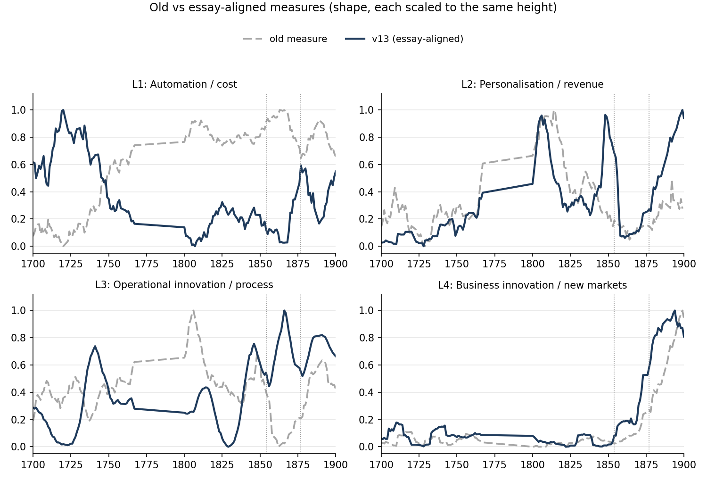
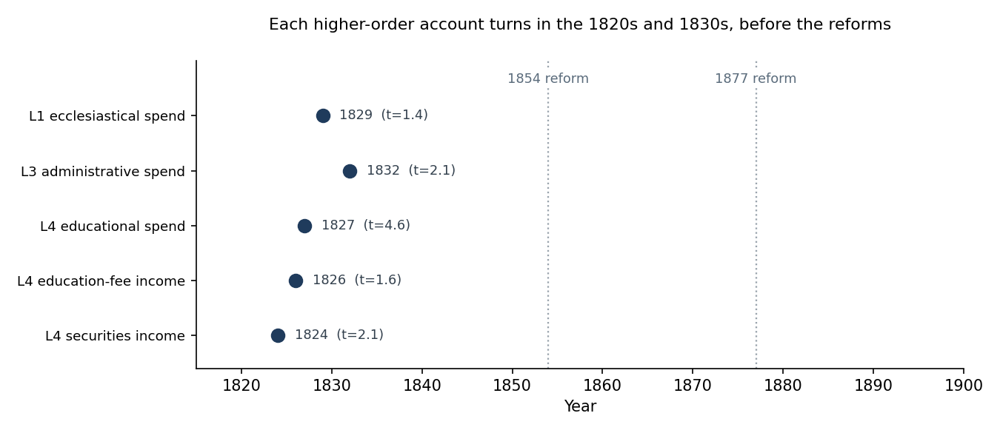

This week we did two things. We rebuilt how we measure the four levels so they follow the definitions in your essay, and we looked more closely at when Oxford's change actually began. The second step changed how we read the reforms.
Your essay opens with a warning that turned out to be the right lens for our data: using a new technology is not the same as being transformed by it. An organisation can adopt many tools and still change nothing, because the tools are laid on top of an operating model that stays exactly as it was. Capability piles up while performance stands still. Reading that, we recognised our own habit. We had mostly been counting how much the college spent on each thing, which is a way of counting tools. Your argument pushed us to ask the harder question instead: what role did the money play in how the institution actually ran?
"AI adoption accumulates capability. AI transformation requires architectural change."
To separate the shallow from the deep, your essay sorts what the technology does into four levels, and the point we had underused before is that each level is defined by the role it plays and the value it creates, not by how advanced the tool is. Automation does the same task more cheaply. Personalisation gives different people different things, which earns revenue. Operational innovation redesigns the workflow itself and moves people from doing the work to coordinating it. Business innovation creates something that simply did not exist before, and your test for it is strict: if the business existed before, it is not Level 4.
| Level | What it really means | Value |
|---|---|---|
| L1 Automation | The same task, done more cheaply. The process does not change. | Cost |
| L2 Personalisation | Different people receive different things. The process still does not change. | Revenue |
| L3 Operational innovation | The workflow is redesigned; people move from doing to supervising. | Process |
| L4 Business innovation | A genuinely new business. If it existed before, it does not count. | New markets |
You also stress that the four levels are a way of diagnosing an organisation rather than a ladder it must climb, and that they live in the operating model itself. That second idea is what told us how to use a 200 year old account book. We cannot see meetings or job titles in a ledger. But the book records how the college raised and spent its money, and each level leaves a different footprint in that record. So instead of asking which category a payment fell into, we began asking a different question for each level: if this kind of change were really happening, what mark would it leave in a book that only records money? That single shift in question is what reorganised the whole week.
When we looked back at our own measures with your definitions in hand, two of them clearly did not belong, and seeing why was uncomfortable but useful. We had been measuring Level 2 by how regular the college's payments were. Yet a tidy payment schedule is just good bookkeeping; it says nothing about whether the college treated individuals differently, which is what your Level 2 is about. We had been measuring Level 4 simply by how much the college spent on education. But Oxford had always taught, and by your own test an old activity cannot be business innovation, so that measure was quietly answering the wrong question. In both cases the framework had been attached to the data after the fact. It described our numbers; it did not test them.
So we rebuilt all four directly from your definitions. For each level we wrote down the footprint we were looking for, then the reason it was the faithful one, so that no choice rests on taste alone.
| Level | How we now read it in the ledger | Why it fits |
|---|---|---|
| L1 cost | Money spent on routine upkeep: buildings, servants, provisions. | These are the same tasks, simply kept running. |
| L2 revenue | Money aimed at named individuals: scholarships, exhibitions, prizes, individual fees. | This is the college giving different people different things. |
| L3 process | Administration, plus how structured the accounts become: more separate accounts, more sub-totals, double entry. | A more organised, reconciled account is the footprint of a redesigned workflow. |
| L4 new markets | Income from what the college did not do in 1700: investing in stocks, and selling education for fees. | These are new ways of earning money, so they pass your "did it exist before" test. |
Level 4 was the hardest to settle, and working through it was where your strict test earned its keep. Teaching could not count, because it was centuries old. So we asked what the college did by 1850 that it genuinely could not have done in 1700, and two answers survived. It had become an investor, earning income from stocks such as consols and from canal and railway holdings. And it had begun to sell education for fees rather than provide it as a charitable duty. Both are new ways of earning, not old ways grown larger, which is exactly the line your essay draws.

Once the measures were honest, the central story held, and it now rests on firmer ground. The two higher levels are where the late change gathers. Through the 1700s and early 1800s Levels 3 and 4 sit low and quiet. Then, by the late 1800s, operational structure climbs to 0.43 and the new business measure reaches 0.32, having started from almost nothing.
| Level | 1700s | ~1800 | early 1800s | late 1800s |
|---|---|---|---|---|
| L1 cost | 0.26 | 0.09 | 0.15 | 0.18 |
| L2 personalisation | 0.04 | 0.23 | 0.14 | 0.15 |
| L3 operational | 0.24 | 0.25 | 0.26 | 0.43 |
| L4 new business | 0.05 | 0.02 | 0.03 | 0.32 |
Two details in this table are worth pausing on, because they match your framework rather than fighting it. The levels do not replace one another; the cost layer never disappears even as the higher layers rise, which is just your point that an organisation lives on several levels at once. And the late surge sits in Levels 3 and 4 together, the operating model and the business model moving in step, exactly the pair you describe as the deep end of transformation. Level 4 is the clearest single result. By the end of the century roughly a third of the college's income came from things that were not a business at all in 1700. That is a very different claim from saying the college simply taught more.
Our headline until now was that the 1854 and 1877 Reform Acts were sharp turning points, and we had grown comfortable repeating it. This week we decided to test our own claim properly, because a story you have stopped questioning is the one most likely to be wrong. Rather than watching the whole institution move at once, we broke the accounts into their parts, every category of spending and income, and many individual accounts, and asked of each one a simple question: in which year did it actually change?
Then came the test that mattered, and the reasoning behind it is plain. We searched only the years before 1854 for a turning point. If a part of the accounts had already started to move on its own, then the reform could not have created that change. At most it confirmed a change that was already under way. So a turning point found before the Act is not noise to be explained away. It is evidence about what the Act did and did not do.
Every higher part of the accounts had already turned in the 1820s and 1830s, a full generation before the reform.
Education spending turns upward in 1827, and that signal is strong and clear. Administration turns in 1832. Investment income builds from the middle 1820s, and the college's long retreat from land rent as its main source of money is visible from as early as 1806. None of these waited for Parliament. When we lined them up, the pattern was hard to miss: the deep change was already in motion across the board before the first Act was written.

This does not erase the reforms, and we were careful not to overcorrect. The very largest jumps still arrive later, in the 1880s and 1890s, and they sit close to the Acts. What the closer look gives us is a truer shape with two phases. A slow drift begins in the 1820s, and the Reform Acts then confirm that drift and scale it up into the large changes of the late century. The reforms were a powerful amplifier rather than the spark. That reading is also the more honest one, since a single sharp date was always a little too clean for an institution that moved as slowly as this.
All of this points back to the heart of your essay. You argue that genuine transformation does not live in the surface layers of automation and personalisation, but in the deeper work of redesigning how an organisation operates and what business it is in. The Oxford accounts say the same thing across two centuries. The change that lasted sat in Levels 3 and 4, not in the cost layer. And much as you describe deep change building quietly inside a firm before it ever shows up in the results, Oxford's deep change was already gathering in the 1820s, beneath the surface, long before the reforms made it visible to everyone.
The week also changed how we hold our own conclusions. We began by trusting a framework we had only loosely attached, and a turning point we had stopped testing. Taking your definitions literally forced better measures, and testing our own headline forced a better story. The transformation was already under way, and the reforms ratified and accelerated it. The quiet turn in education spending in 1827 is where that story now begins.